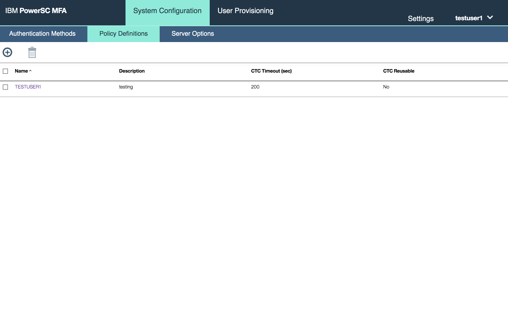
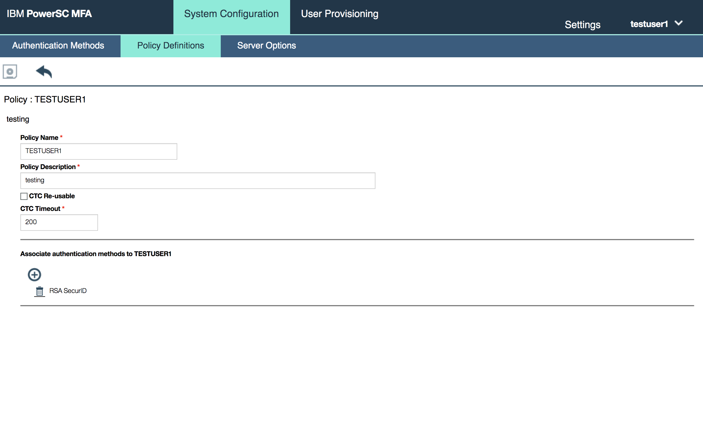
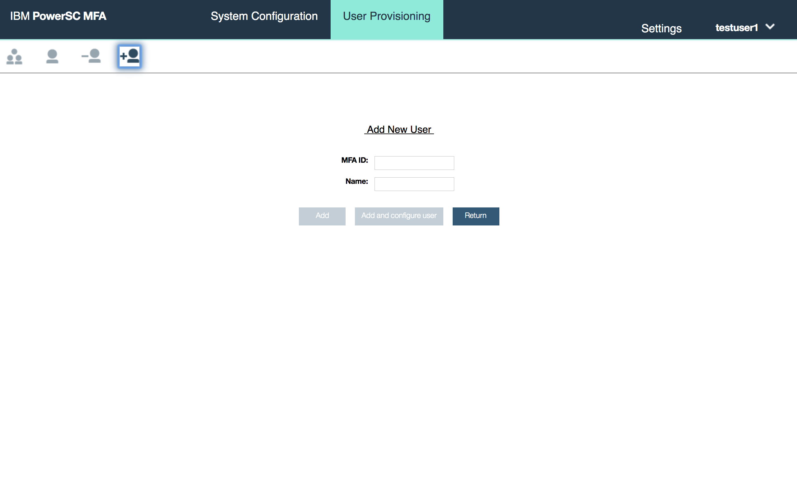
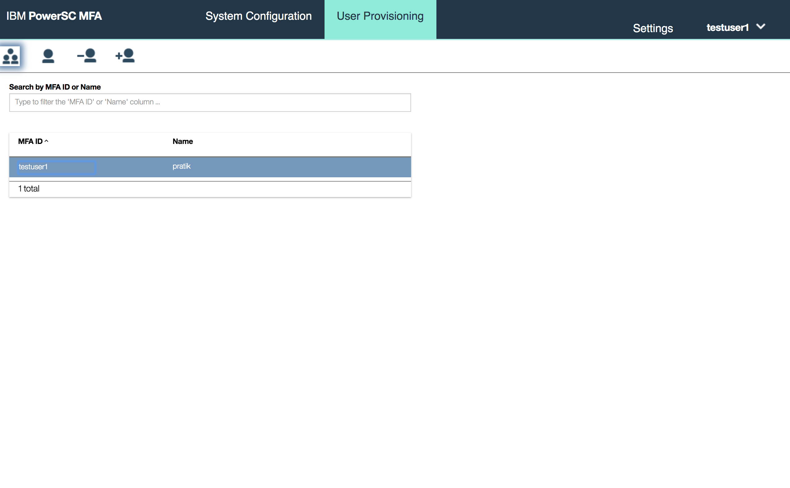
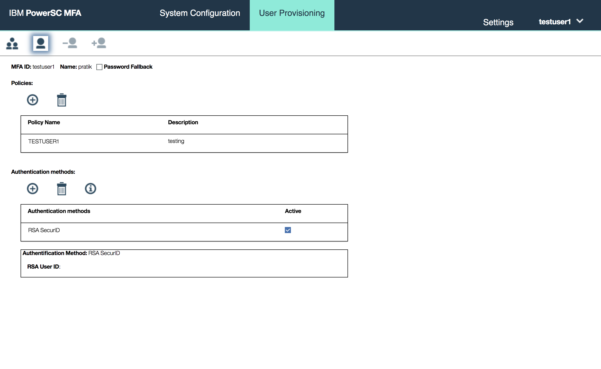
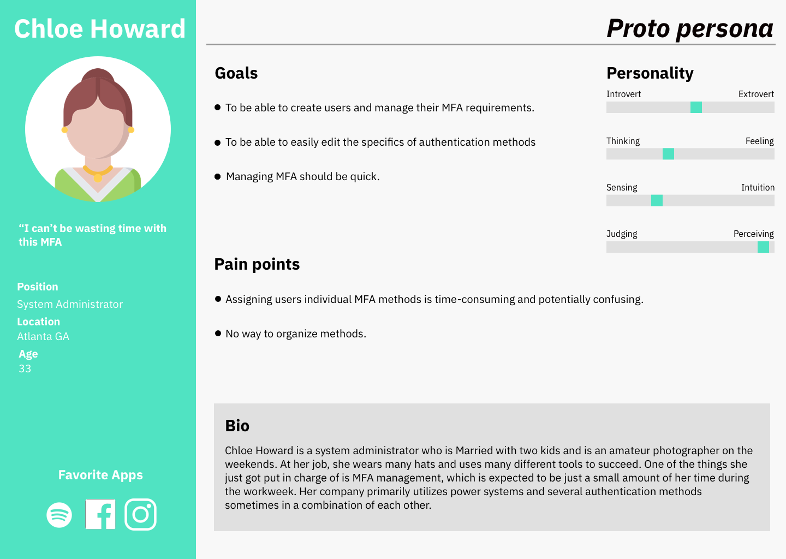
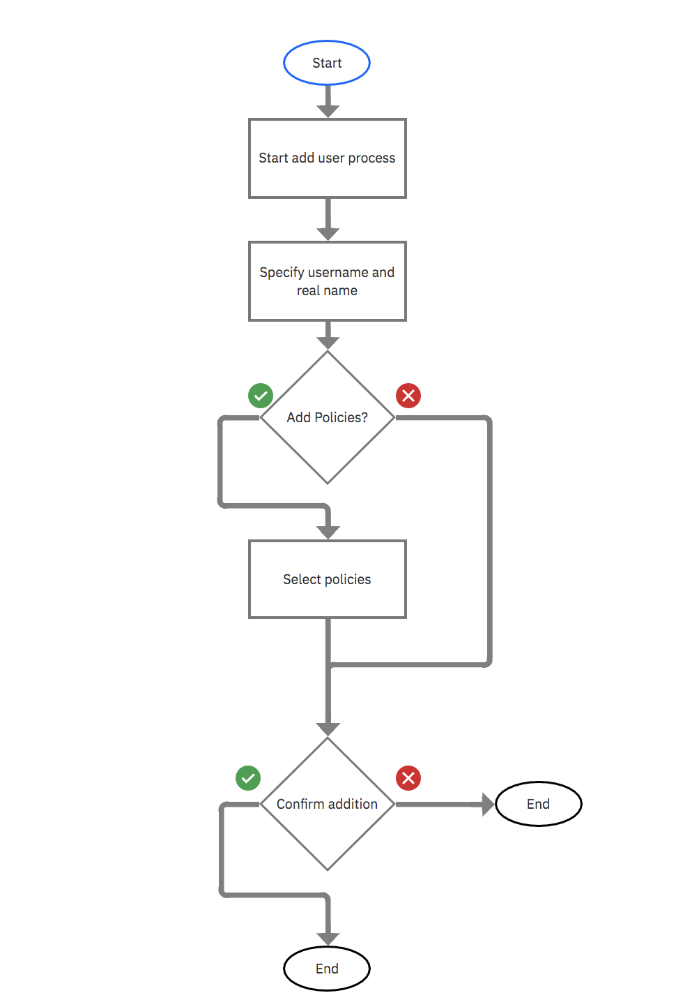
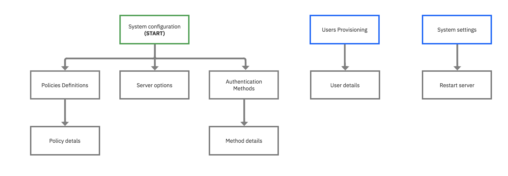
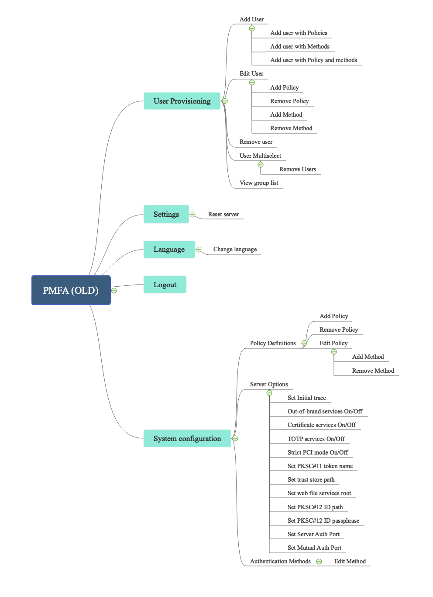
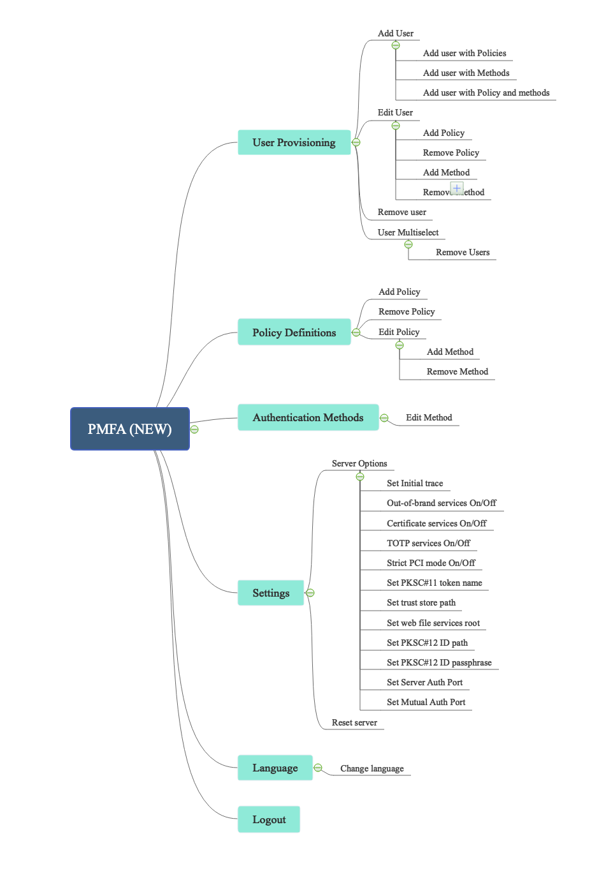

Power MFA is a web application created to help manage user multi-factor authentications for Power systems in an easy to use mannor.
Mission Statement
PMFA was in need of a redesign. Unclear icons, stronge patterns and a poor use of real estate were pervasive everywhere as well as confusing information architecture.
Screenshots of the old design





My main focus in this redesign was to identify the primary use cases for this application
and use a "two trey system" to utilize screen space while providing more context for the users.
Research
After extensive talks with subject matter experts I created the following persona, use cases/task flows.
User Persona

PMFA was originally created to address these painpoints and goals listed in Chloe's Persona. However is was not designed
with extensive thoughts to its primary use cases in mind. Those were then discussed and identified.
A set of rough task flows was then created.
Task flows
1) I am an systems administator and I want to add a user with different types of authentications.

2) I am a system administrator and I want to add a policy to a user.
3) As a system administrator I want to edit a policy.
Maps
PMFA consists of three major components. User provisioning, where users are assigned the policies that govern
what authentication rules the have to abide by, Policy definitions, an area where the user creates and edits verious groups of
authentication methods known as policies and Authentication Methods, a list of the various individual rules dictating a given method
of authentication.
In order to understand the structure of PMFA better and redesign the application to be user centric,
I created site maps and architecture maps of what the application is and what I wanted it to be.
Old site map

New site map
Old information architecture map

New information architecture map

User Flows
Here are the user flows I created with the new design and pattern concepts.
1) I am an systems administator and I want to add a user with different types of authentications.
2) I am a system administrator and I want to add a policy to a user.
3) As a system administrator I want to edit a policy.